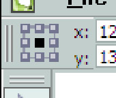

Маленькие приятности в CorelDRAW X5
Sancho / 11.03.2010, 22:39/00:41
Форум:
Что-то забыли о позитиве :) а то всё баги да баги. Итак, предлагаю в этой теме публиковать кто какие фишечки нашёл в новом кореле.
Вот одна:
Как уже известно, в докере трансформ отсутствует кнопка Apply to Duplicate. Вместо неё нам предлагается ввести кол-во копий и нажать кнопку Apply. Однако если зажать Shift и только тогда нажать кнопку Apply, значение в поле Copies игнорируется, и делается только одна копия, как при нажатии Apply to Duplicate в Х4.
"С каких" што?.. "С каких" пор в МС Виндоус дефолтное разрешение экрана 96 dpi? Давно, точную дату без специальных поисков не назову. Майкрософт данный факт даже использовали в рекламе, как аргумент против Эппл — "у нас на экране помещается больше" или как-то так это звучало.
Значит, вы уникальны. :D
По сию пору, в тех же ХР — "Свойства экрана" > "Параметры" > "Дополнительно" > "Общие":
Экран
Масштаб (количество точек на дюйм):
Обычный размер (96 точек/дюйм)
Обычный, да. Он же — дефолтный, и если его не менять, то такой от момента установки ОСи и до конца света.
Если я правильно понял Доброго_ХАМа (в чём на 100% не уверен), то у него при "попиксельной" прорисовке исходный объект и проэкспортированный визуально отличаются. Я предположил, что имелся ввиду визуальный размер (размытие обводок происходит или весь объект меньше становится). Или что имелось ввиду под "1:1", если не видимость при том же масштабе? Значит, имеет место ресемплинг при самом просмотре (тут, конечно, я могу быть неправ, и ресемплинг происходит уже при экспорте). Что и должно быть, если рисуем (и рассматриваем) при одном разрешении, экспортируем в другое, более низкое), а рассматриваем при прежнем. Тот же эффект, как при увеличении масштаба (зуммировании) при просмотре растровых объектов.
А ответ про 72 или 96 в кореле давно уже состоялся! или лень прочитать на несколько постов раньше?
Не забываем что тема называется "Маленькие приятности в CorelDRAW X5"!
Так что хватит оффтопить.
Однако флуд нужно прекратить. Есть тема, высказываемся. А если хочется о чём то другом поговорить - создавайте отдельные темы. На этом точка!
MacroManager - ну очень удобная панель - управлять макросами теперь удовольствие. (Вот бы ещё возможность "перетаскивать" была - сразу - раз - и на панель инструментов или ещё куда кнопочку макроса поставить)
Export to JPG - переработанное окно. Типа "2 в одном" - раньше аж 2 окошка вылезало - одно с настройками, другое с превью - теперь одно. Приятно.
Что-то подделали в перерисовке/обновлении экрана - пока не понял - лучше стало или хуже
Углу скругления прямоугольников теперь не искажаются при масштабировании собственно прямоугольников! ура! Кстати есть кнопочка, чтобы отключать этот режим - тогда всё по старому. И ещё - теперь радиусы скругления не в процентах, а в миллиметрах! Это удобно при отрисовке высечек упаковки например, да и вообще - удобно!
Добавлено (06.05.2010, 20:26)
---------------------------------------------
Хочу поправиться, экспорт в растр без белой рамочки возможен только с помощью опции Matte где грубо говоря можно выбрать цвет той самой рамочки. Но что делать если изображение цветастое, а я не хочу ни белой, ни черной рамки... опять же открывать потом в шопе и кропать по периметру пару пикселей?
Поздновато я присоединился к теме, но могу добавить: очень приятно, что в Х5 вернулось
понятие "Габариты текстового блока" как графического объекта. Имею в виду длину строки
и её высоту. Занимаюсь печатями и штампами, приходится соизмерять величину строк с га-
баритами штемпельной оснастки. В 7 кореле эта функция была, а в 12-м вдруг исчезла. Ещё раз спасибо разработчикам !
Могу добавить еще об одном приятном моменте. Хотя Sancho и писал об этом, но, все-таки, порадуюсь еще раз.
Наконец-то появилась возможность оперировать девятью контрольными точками объекта не только в докере Transformation, но и, например, в Property Bar.

Добавляем туда кнопку с именем Object Origin и наслаждаемся! Теперь не хуже, чем Page Maker, InDesign, Illustrator...
Страницы